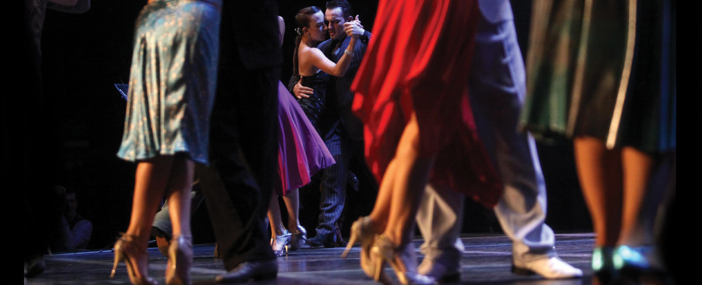
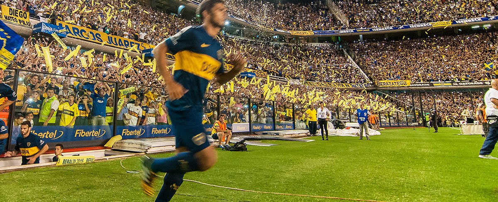
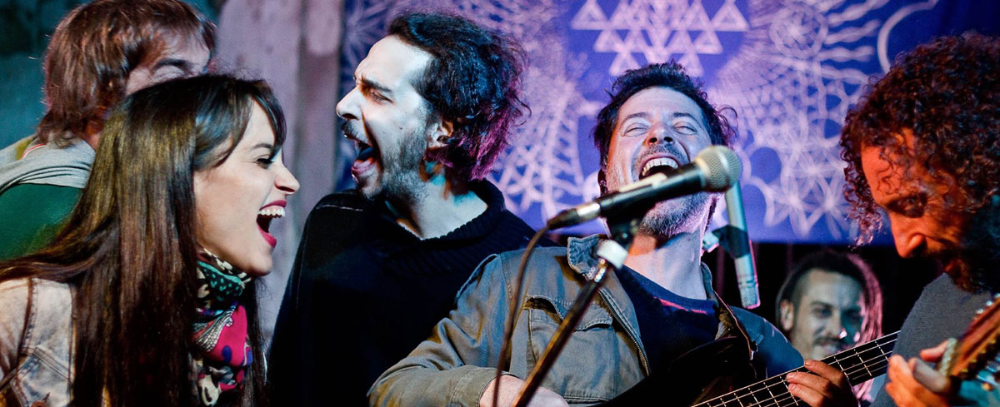
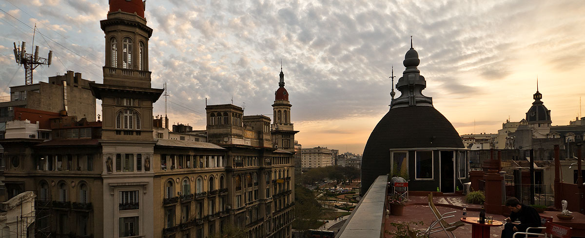
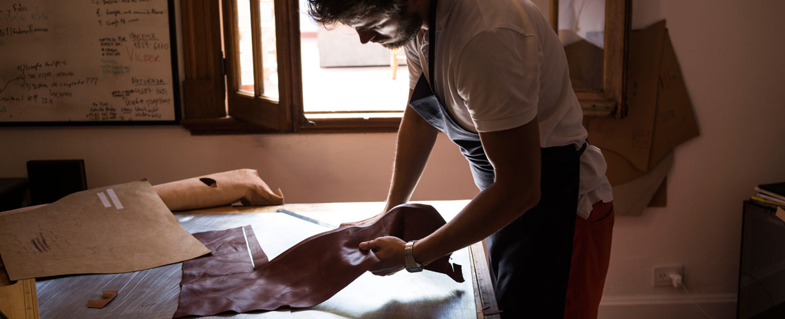
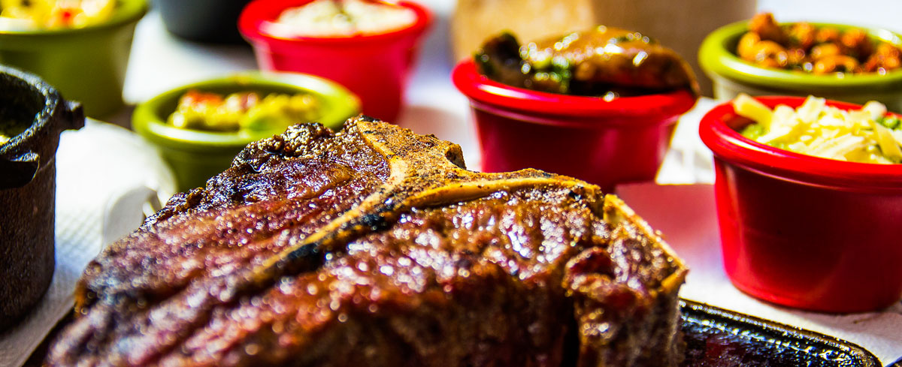
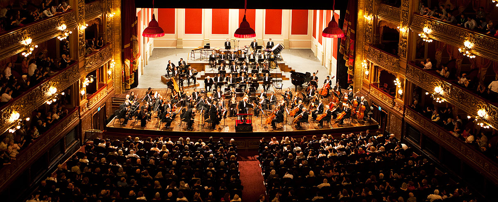
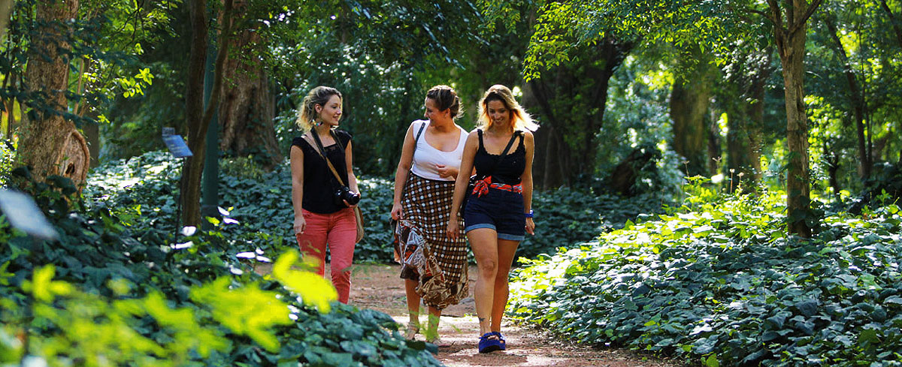

Porque podrás bailar tango en su lugar de origen
Nacido en el Río de la Plata en el siglo XIX, el tango es una fusión entre la cultura africana, las culturas locales de los gauchos y los pueblos originarios y el aporte de los inmigrantes europeos y de Medio Oriente. En la ciudad encontrarás numerosas tanguerías con orquestas y bailarines en vivo. ¿Lo mejor? Los lugares más reconocidos incluyen una cena con una especialidad de carnes argentinas o un menú internacional.

Leer más
Porque entenderás hasta dónde puede llegar la pasión por el fútbol
En Buenos Aires se respira fútbol en todo momento: se siente en los estadios, se escucha en las confiterías de barrio y se observa en un abrazo de gol entre compañeros de un equipo de una liga aficionada. Además Buenos Aires es la sede de la “experiencia deportiva más intensa del mundo”: el SuperClásico, el partido entre Boca y River, los dos equipos más importantes del país, en el que se vive lo más profundo de esta pasión.

Leer más
Porque vas a celebrar y reír hasta (muy) tarde
La noche es un elemento clave en la “ciudad que nunca duerme”. En sus bares y barras, cervecerías y discotecas, los jóvenes y adultos encuentran propuestas durante toda la semana para disfrutar hasta que salga nuevamente el sol. Sólo aquí podrás cenar en un restaurante después de medianoche o arrancar la movida a las tres de la madrugada. ¿Te vas a perder su noche eterna?

Leer más
Porque decimos hola, hello, bonjour, ciao y olá
Buenos Aires es el fiel reflejo de quienes vinieron desde lejos para habitar “el nuevo mundo”. En la identidad visual porteña, se entremezclan influencias extranjeras que conforman un todo desigual y apasionante. Tenemos matices españoles, italianos, franceses, ingleses, rusos, japoneses, chinos, brasileños y peruanos, entre tantos otros. Lo descubrirás en su arquitectura, en su comida y en la manera de hablar y de ser de sus habitantes.

Leer más
Porque vas a comprar prendas de autor de verdadera calidad
Marcas locales y diseñadores independientes convierten a Buenos Aires en el destino ideal para aquellos que buscan nuevas estéticas y prendas exclusivas. ¿La estrella del mercado? Curtiembres con productos artesanales de cuero auténtico. Tampoco te pierdas las ferias de antigüedades y artesanías, llenas de curiosidades e historias escondidas.

Leer más
Porque probarás todos los sabores del mundo en una sola ciudad
La cocina porteña se basa en la esencia de los inmigrantes que poblaron Buenos Aires en el siglo XIX y enriquecieron el menú criollo con recetas de España, Italia, Alemania y la increíble cocina andina de los países limítrofes. Su calidad gastronómica está reconocida en el listado “Latin America’s 50 Best Restaurants 2016”, con ocho restaurantes porteños premiados. No te vayas sin probar un buen asado, la pizza porteña, las empanadas, el helado de dulce de leche, los alfajores, unos ricos churros y, por supuesto, el tradicional mate.

Leer más
Porque conocerás en dónde vivió y creció el Papa Francisco
El Papa del fin del mundo es argentino y su nombre secular es Jorge Mario Bergoglio. Nació y se crió en Flores, en Buenos Aires, y se desempeñó como Arzobispo de la provincia hasta el 13 de marzo de 2013, día en el que fue nombrado Papa. Conocé su casa, su jardín de infantes y escuela primaria y la plaza en donde jugaba con sus amigos. Por otro lado, también nos caracteriza la multiplicidad de templos: contamos con iglesias católicas, sinagogas, templos cristianos, mezquitas y centros budistas e hinduistas.
Leer más
Porque disfrutarás de su costado más cultural
Son muchos los motivos que llevan a indicar que Buenos Aires es una ciudad empapada de cultura. Lo demuestran sus 380 librerías, sus 287 teatros y sus 160 museos. También colabora el Colón como uno de los cuatro teatros líricos más destacados del mundo, el fileteado porteño como Patrimonio Cultural Inmaterial de la Humanidad por la Unesco y la avenida Corrientes como testigo de la época de oro del tango. Ya sea una pared (visiten El regreso de Quinquela, con 2000 m²) o una servilleta, entendemos que cualquier excusa puede obrar de lienzo para manifestar un ataque de inspiración.

Leer más
Porque te rodeará el verde y el aire fresco
Somos un destino urbano amigable con la naturaleza, ideal para transitar en bicicleta o a pie. Sus calles peatonales y el extendido sistema de ciclovías permiten recorrerla de modo sustentable. Tenemos más de 100 espacios verdes públicos; uno de ellos, la Reserva Ecológica, de 350 hectáreas, es punto de encuentro de miles de runners, turistas, jóvenes y especialistas en medio ambiente. Como se diría en criollo, para encerrarse bajo cuatro paredes, mejor quedarse en casa, ¿no? Salí, respirá el aire fresco y tomá cuantas imágenes te permita la memoria de tu cámara o celular.

Leer más
Porque volverás con muchísimos amigos
La esencia de Buenos Aires está en su gente. No importa cuánto tiempo dure tu estadía, al final del viaje entenderás que el sabor del mate no está para nada mal pero que, en verdad, este representa un símbolo de afecto y camaradería; comprenderás que es tanto lo que disfrutamos conversar después de comer que hasta a eso le pusimos el nombre de “sobremesa”; y, por sobre todas las cosas, habrás descifrado que, aunque nos acusen de dar demasiados besos y abrazos, las personas no contamos con otra cualidad más genuina que la demostración de cariño.
Leer más